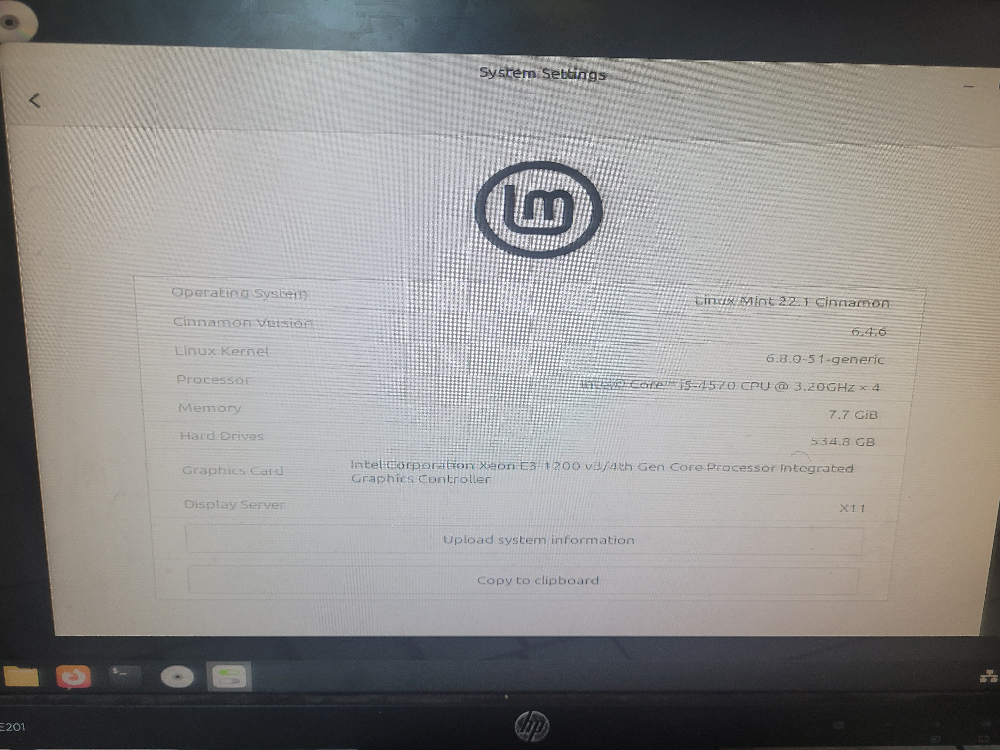

Today was more or less smooth (kinda of, I'll get to that later), I just came early today this time around, (like 11AM or something), so I started working on the last remaining computers, while I was working on the last 2 I realized that both of em do not wanna boot to my USB flash drive, after looking at the bios and spat out "Security Violation" error, which means the bios is the culprit, but as I was trying to see what I was going to do next, principal came in, he paid some money for 1 class that I finished yesterday, and I told him about the last remaining PCs having this problem he saw what happened after hearing that he went ahead and fixed that up somehow, he basically inserted my flash drive, made some sort of certificate on the flash drive and now the 2 computers accept my flash drive just fine, after he finished with that he told me to install brave in all of the computers after I'm done, as he forgot to mention that to me first, he also said he would pay me for the 2nd class tomorrow when he counts these computers, so I finished installing Mint and the custom VSCode, I went back to the classes installing brave which was easier because I just ran flatpak install in all computers at once and I was done right when students came into school, I overheard 2 students saying they wanna try Linux on their laptops, which I found kind of cool, the lesson started and I went home that day, I decided to come back tomorrow early so I can finally get paid and do one last check up to see if everything is in working order.
